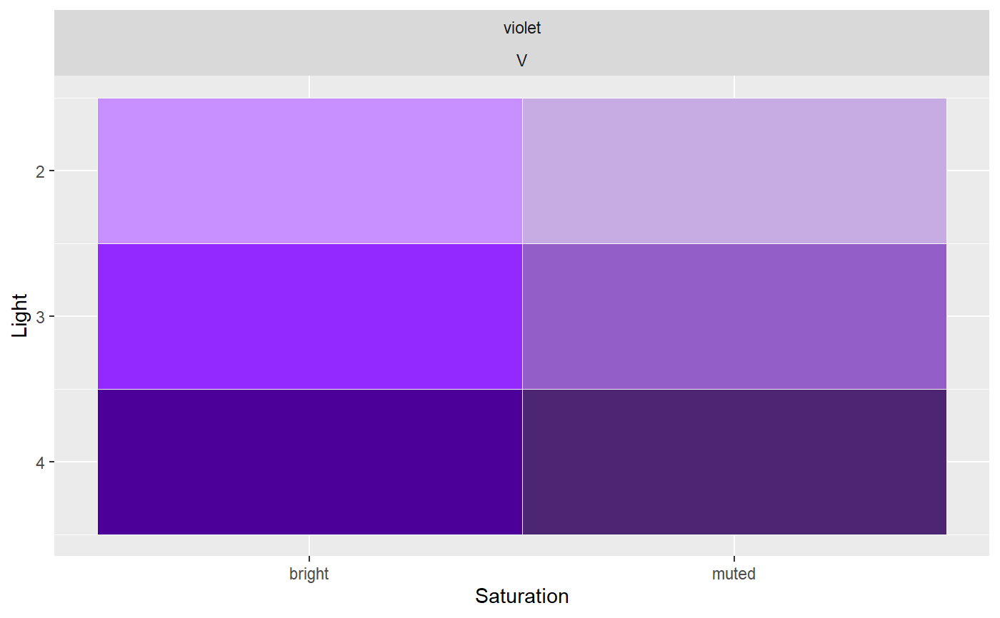

Generates a palette within 1 hue
Generates a palette of reds
Generates a palette of oranges
Generates a palette of yellows
Generates a palette of greens
Generates a palette of teals
Generates a palette of blues
Generates a palette of violets
Generates a palette of pinks
Generates a palette of greys
sc_within(hue, light = c(2:5), sat = "", return = NULL) sc_red(light = 2:5, sat = "", ...) sc_orange(light = 2:5, sat = "", ...) sc_yellow(light = 2:5, sat = "", ...) sc_green(light = 2:5, sat = "", ...) sc_teal(light = 2:5, sat = "", ...) sc_blue(light = 2:5, sat = "", ...) sc_violet(light = 2:5, sat = "", ...) sc_pink(light = 2:5, sat = "", ...) sc_grey(light = 2:5, sat = "", ...)
| hue | ex: "red", "blue", "violet" |
|---|---|
| light | the lightness of the color, ex: 1:5 |
| sat | the saturation of the color, ex: "bright", "muted", "dull" or "" (base) |
| return | defaults to returning hex codes but can also return a table or plot of the generated palette |
sc_within("violet", 1:5, "bright" , return = "table")#> # A tibble: 5 x 2 #> color_name hex #> <chr> <chr> #> 1 brightviolet1 #EBD6FF #> 2 brightviolet2 #C78FFF #> 3 brightviolet3 #9429FF #> 4 brightviolet4 #4D0099 #> 5 brightviolet5 #26004Dsc_within("red", 1:3)#> [1] "#FADBDB" "#F19D9D" "#E44444"